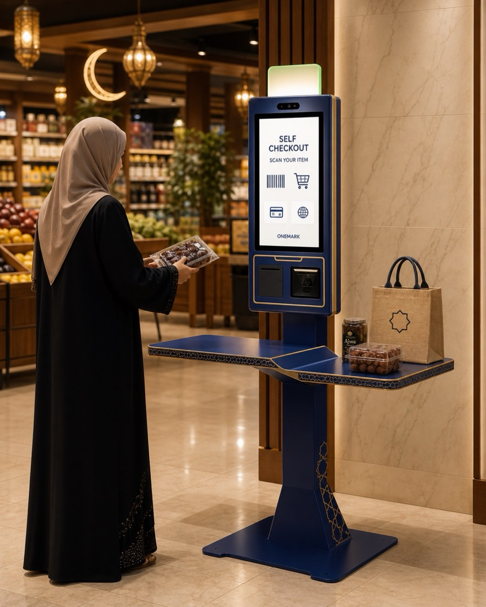
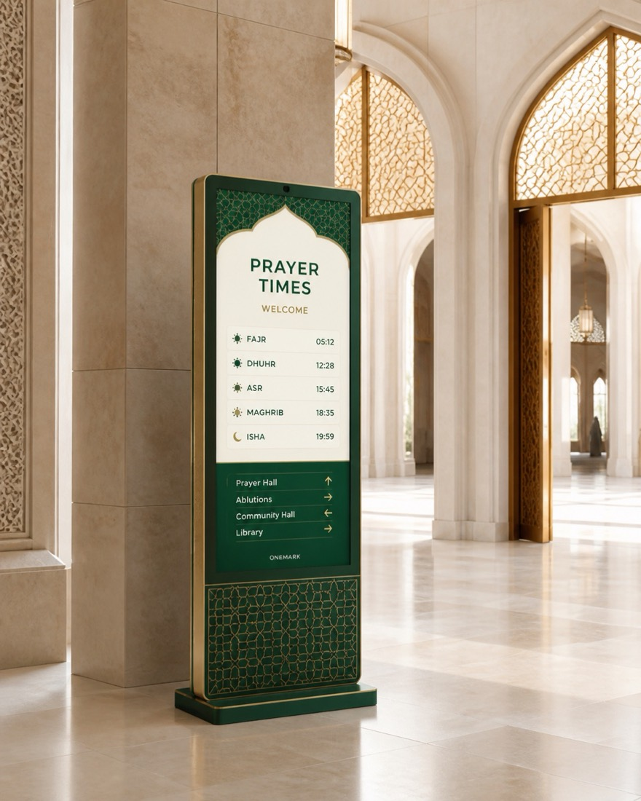
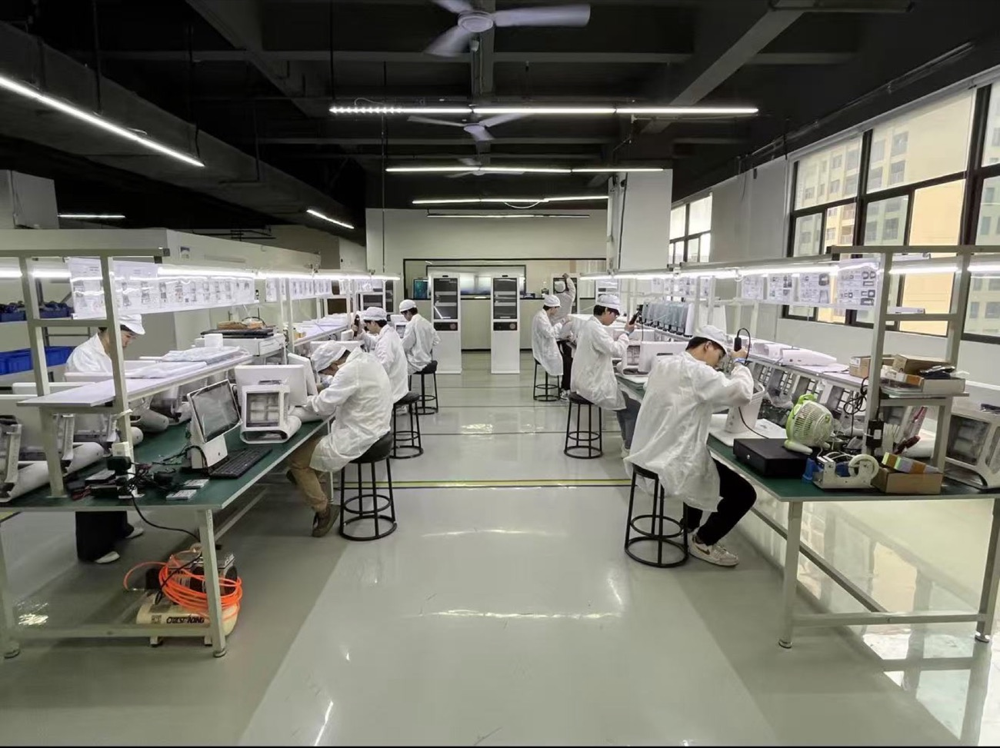
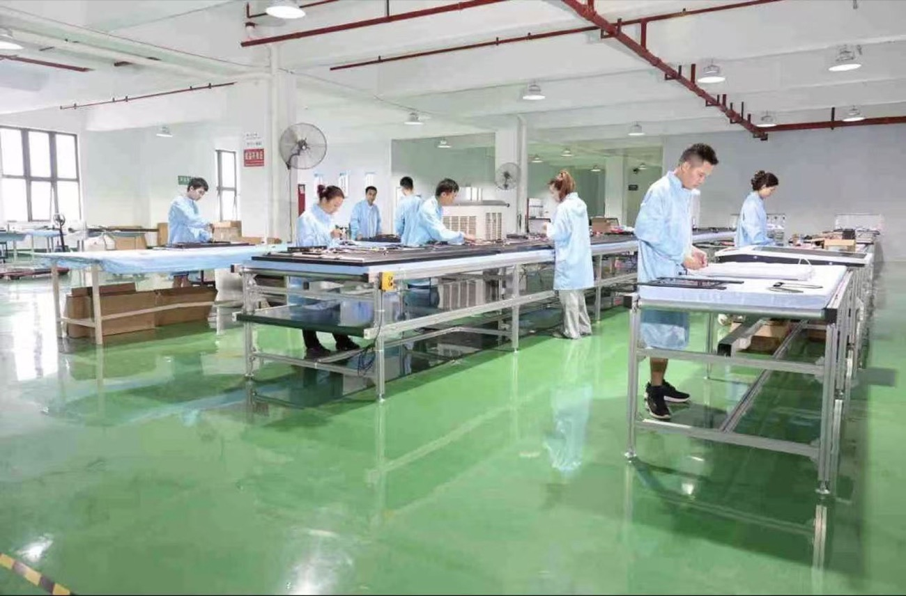
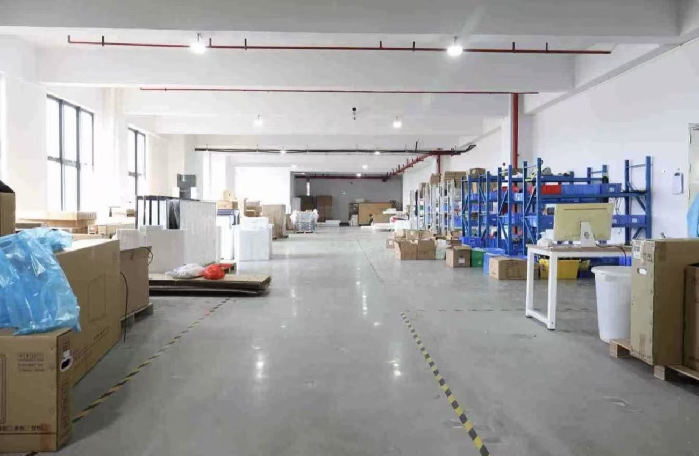

مطعم وQSR
محطات الطلب الذاتي، وشاشات عرض القائمة، وأجهزة الدفع لتقليل قوائم الانتظار للسلاسل وصالات الطعام والمقاصف.
الأجهزة التجارية · تم تصميمها في شنتشن
أكشاك مخصصة وشاشات عرض تجارية للمطاعم وشركاء البيع بالتجزئة والبرمجيات - تم تصميمها لتتناسب مع السوق وسير العمل والعلامة التجارية.
مصممة لمشتري المشروع
تحتاج معظم مشاريع الأكشاك إلى أكثر من خزانة قياسية. يؤثر حجم الشاشة ونظام التشغيل والطابعة والماسح الضوئي وموضع محطة الدفع والعلامة التجارية واللغة وبيئة التثبيت على التصميم النهائي. نحن نعمل بدءًا من ملخص مشروعك وصولاً إلى تكوين الأجهزة المناسب.
عائلات المنتجات
اختر نقطة البداية، ثم قم بتخصيص التكوين لتطبيقك وسوق الوجهة.

أكشاك معيارية لمسح الباركود/QR، وطباعة الإيصالات، وتركيب محطات الدفع، وتخطيطات منطقة التعبئة.
عرض الخيارات →
تنسيقات سطح العمل والمائلة والقائمّة بذاتها للطلب وإدارة قائمة الانتظار والتفاعل مع القائمة.
عرض الخيارات →
أجهزة العرض التجارية للبيع بالتجزئة والضيافة والردهات والعروض الترويجية والمعلومات العامة.
عرض الخيارات →
تم تطوير الخزانة والعلامات التجارية والوحدات النمطية والتكوينات الجاهزة للنشر حول المفهوم الخاص بك.
عرض الخيارات →مصممة للأسواق المحلية
يجب أن تشعر الأجهزة بأنها أصلية في البيئة التي يتم استخدامها فيها. نحن نقوم بتكييف شكل الغلاف والتشطيب والعلامة التجارية والتخطيط المحيطي وعرض الواجهة حول تطبيقك ومنطقتك.
استكشاف اتجاه مخصص →

حلول التطبيق
نحن نساعد مشتري B2B على تحديد تنسيق الخزانة والتكوين الطرفي قبل إصدار العينة أو مقترح الإنتاج.
محطات الطلب الذاتي، وشاشات عرض القائمة، وأجهزة الدفع لتقليل قوائم الانتظار للسلاسل وصالات الطعام والمقاصف.
محطات الدفع الذاتي، ومدققي الأسعار، وأنظمة عرض البيع بالتجزئة مصممة خصيصًا لسير عمل المسح الضوئي والدفع والتعبئة.
أجهزة كشك جاهزة لتصنيع المعدات الأصلية للتوزيع المحلي وتكامل البرامج وتكرار مشاريع الطرح.
أكشاك المعلومات، وتحديد الطرق، وتسجيل وصول الزوار، واللافتات الرقمية لبيئات الضيافة والنقل والخدمات.
تجربة السوق المختارة
عملت ONEMARK مع عملاء الأعمال في الولايات المتحدة، وUAE وأمريكا الجنوبية. تظل هويات العملاء وتفاصيل المشروع سرية ما لم تتم الموافقة على النشر.
دعم التكوين لشاشات LCD التجارية والأجهزة المخصصة، مع مراجعة المواصفات والتسليم لكل مشروع.
تغطي مناقشات المشروع العروض التجارية وتنسيقات الأكشاك والعلامات التجارية أو خيارات التكوين المناسبة للسوق.
تكوين الأجهزة واتصالات OEM/ODM للعملاء الإقليميين والموزعين وشركاء المشروع.
يتم حجب أسماء العملاء بشكل افتراضي. لا يمكن مشاركة المراجع التي تم التحقق منها إلا بموافقة العميل.
كيف يعمل التخصيص
أرسل ما لديك بالفعل - صورة مرجعية أو رسم فني أو صورة تثبيت أو تكوين الهدف. سنقوم بمراجعة هيكل الأجهزة مع فريق المصنع قبل تقديم اقتراح مخصص.
ابدأ بملخص مشروعك ←التطبيق والصورة المرجعية وحجم الشاشة ونظام التشغيل والوحدات المطلوبة والسوق المستهدف والكمية المقدرة.
نقوم بفحص هيكل الخزانة والأجهزة الطرفية وطريقة العلامة التجارية والتعبئة والتكوين المناسب مع فريق المصنع.
عادةً ما تتم جدولة العينات المخصصة القياسية خلال 10-15 يومًا بعد تأكيد التكوين.
بعد الموافقة على العينة، نقوم بمواءمة مستندات الإنتاج وتعبئة التصدير والشحن مع خطة الطرح الخاصة بك.



المصنع والجودة
تقوم شركة ONEMARK بتصنيع أجهزة العرض التجارية وأجهزة الخدمة الذاتية في شنتشن، الصين. يغطي سير عمل الإنتاج إعداد المواد والتجميع والفحوصات الوظيفية واختبارات التقادم وتعبئة الصادرات.
جاهز عندما تكون كذلك
شارك خمسة تفاصيل عملية واحصل على مراجعة أكثر صلة بالتكوين من فريقنا.